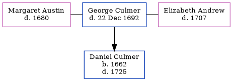

George Culmer - 1692
[ Home ] | [ Calendar ] | [ Surnames Index ] | [ Errors ] | [ Family History ]George Culmer was the 9 times great-grandfather of Nigel Horne was married twice - to Margaret Austin (on 5 Jun 1638 in Stourmouth, Kent, England) Elizabeth Andrew (on 24 May 1684 in Canterbury, Kent, England, following the death of Margaret in 1680)3. He had 1 child with Margaret Austin, Daniel.
He died on 22 Dec 1692 in Preston, Wingham, Kent1,2 (last will and testament: "Source: Archdeaconry Court of Canterbury v.78 f.171 #188979; George Culmer of Preston next Wingham, Kent, yeoman; John Culmer, son, sole Executor give Elizabeth 'my now wife' over and above what I am bound by bond upon our marriage that my Executor shall pay her if she overlives me all such household goods as she brought me in marriage the poor widowesof Preston the sum of forty shillings; George Minter, son in law and Jane (his wife my daughter); five grandchildren (the children of Richard Saffery and Susannah his wife my late daughter); sons Stephen Culmer and Daniell Culmer; grandson George Culmer son of John Culmer; grandson George Culmer son of Daniell Culmer; property in Preston occupied by Michael Huffham; witnessed 3 July 1690 by Robert Howgill? and Thos? Howell") and was buried at All Saints Church, Church Lane in Stourmouth on 26 Dec 1692.
1,4,5,6
Children
- Daniel was born in 1662
Citations
- England, Select Deaths and Burials, 1538-1991 Ancestry.com Operations, Inc.
- Kent, England, Tyler Index to Parish Registers, 1538-1874 Online publication - Provo, UT, USA: Ancestry.com Operations, Inc., 2010. This collection was indexed by Ancestry World Archives Project contributors.Original data - Frank Watt Tyler. The Tyler Collection. Canterbury, Kent, England: The Institute of Herald
- England Marriages 1538-1973 - Findmypast
- Kent, Canterbury Archdeaconry burials 1538-1988 - Findmypast
- England Deaths & Burials 1538-1991 - Findmypast
- England Deaths & Burials 1538-1991 - Findmypast
Media
Kent, Canterbury Archdeaconry burials 1538-1988 - GBPRS/CANT/D/95509323
England Marriages 1538-1973 - R_847916035
England Marriages 1538-1973 - R_848120629
Kent, East Kent marriage index 1538-1754 - GBPRS/EASTKENT/MAR/045785/1
England, Boyd's marriage indexes, 1538-1850 - GBPRS/M/710019272/2
England Marriages 1538-1973 - R_855433583
England Marriages 1538-1973 - R_847965953
England Marriages 1538-1973 - R_847786688
Kent Wills & Probate Indexes 1328-1890 - ORIGINS-KENTWILLS-14248
Kent Wills & Probate Indexes 1328-1890 Transcription - GBOR-KENT-PROBATE-0047013
England Deaths & Burials 1538-1991 - R_275588216
England Deaths & Burials 1538-1991 - R_276091342
Family Tree
Map
Generated by ged2site. Last updated on Jul 3, 2024